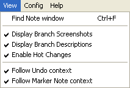

5. Program customization
Program customization
Certain useful features of Taseditor are disabled by default, because using them requires understanding of their working principles. This chapter describes all Taseditor options and settings, as well as FCEUX settings that affect your work in Taseditor.
Settings are kept in the fceux.cfg file in the emulator's main folder. If you delete this file, all settings will reset to default values when you launch FCEUX.
|
First, if you've already read the chapter 2 and understood the purpose of all GUI elements, you should disable pop-up tooltips (intended for newbies only). Go to the "Help" submenu of Taseditor main menu and uncheck the option "Enable Tooltips". Before doing it you may want to actually read all the tooltips by pointing the mouse cursor at different elements of TAS Editor window, and thus consolidate your knowledge of the GUI. |
|

Now open the "View" submenu.

The "Find Note window" brings up the window dedicated to searching text in Marker Notes. This function is useful when you're documenting your movie with Notes. It's described in the next chapter.
Then there are several checkboxes allowing to customize the program interface. To try the customization possibilities, create a test project and experiment with it.
View -> Display Branch Screenshots
Displays pop-up screenshots when you point mouse cursor over Bookmarks. The screenshot helps you to recall movie events saved to the Bookmark, which simplifies searching for the needed branch of the movie, as you don't have to actually load the Bookmark when you need to have an idea on its contents. This way you can also quickly compare results of several alternative approaches.
This option is enabled by default. If disabled, no screenshots will pop up on mouse hover.
It's recommended to have it enabled, unless you're annoyed with pop-up pictures partially obstructing the view on the Piano Roll.
View -> Display Branch Descriptions
Displays pop-up descriptions when you point mouse cursor over Bookmarks. The text, as well as the screenshot, gives you additional information about the contents of the Bookmark, helping to decide whether this branch should be loaded or not.
The description text is taken from the Marker above the frame of that Bookmark. The Marker itself may be actually removed from the working movie long ago, but if the Bookmark was created while the Marked existed, then this Marker still exists in the branch of this Bookmark. And if you load this Bookmark, the Marker will reappear on its place.
So, when trying alternative strategies of playing through a large segment (e.g. whole level of the game), before saving every approach to a separate branch, you can make a name for the approach by setting a Marker at the Playback cursor position and typing a text message like "here I chose upper way" or just "upper way". After that, save a Bookmark on that frame. Then you can remove the Marker together with the Input of the old approach and create next approach by applying another strategy of playing the segment. When the new approach if finished and replayed, you can again create a Marker with a Note like "here I chose lower way" and save all that to another Bookmark. After that you can save the project and, say, close Taseditor. Next day you can easily recall all pros and cons of the two strategies you tried. Each Bookmark will show you the screenshot of the bookmarked frame and the text you wrote for that Bookmark. While it can be hard to distinguish the strategies by screenshots (since both approaches end at the same event of the game), but text descriptions will make them easy to recognize.
This option is enabled by default. If disabled, no descriptions will pop up on mouse hover.
It's recommended to have it enabled, unless you're annoyed with pop-up text fields.
View -> Enable Hot Changes
Switches the Hot Changes feature on and off.
Enabled by default. If disabled, all buttonpress symbols will be displayed in a standard black color. Otherwise, each symbol will have its own level of "hotness", depending on how long ago the corresponding Piano Roll cell was edited. Recently modified buttonpresses are more hot, so they are displayed by more intense shade of red. As the hotness decreases, the symbol colors become darker (more cold) and finally turn into standard black.

In total, Taseditor supports 15 shades of hotness + zeroth black color. When you change the state of an Input cell, it receives maximum hotness value (15), and all the previously edited cells cool down by 1. Thereby you only need a quick look at the Piano Roll to get an idea which edits were done just recently and which were done before, or long ago.
Also, with Hot Changes you can see which buttonpresses were recently removed – instead of an empty cell there will be a dash of the corresponding color. The dash also changes its color while cooling down, and after 15 levels it finally disappears.
The same dashes appear when you insert new frames in the movie.
It's recommended to enable this feature to increase the usability of Taseditor. In theory it should even increase your working speed, because this way you never have to recall which actions you did a minute ago. Of course even without Hot Changes you can always remind the sequence of last actions by reverting History (making several Ctrl + Z keypresses) and then returning the movie to normal state again (making as many Ctrl + Y keypresses). But in this case you will also truncate the Greenzone. So better just leave the Hot Changes enabled.
The only downside of this feature is that Hot Changes data will be stored in the History Log and in FM3 project file, thus increasing the amount of occupied memory.
View -> Follow undo context
Scrolls the Piano Roll to relevant place every time you make an undo or redo. A purple pointer appears on the modified frame for a brief moment, thus drawing your attention to the movie changes.
This option is enabled by default. If disabled, the Piano Roll won't automatically scroll to the purple pointer.
It's recommended to have it enabled, in order to be able to backtrack undos. Usually, right after you revert an operation you want to make another edit on the same frame or nearby, so the autoscrolling is useful.
View -> Follow Marker Note context
Scrolls the Piano Roll to relevant Marker when you start editing its Note. For example, when you click the upper edit field to start editing the Note of the Marker above the Playback cursor, Piano Roll jumps to that Marker, allowing you to see its context (neighbor Markers and Input). And when you click the lower edit field (a Note above the Selection cursor), Piano Roll scrolls to the Marker above the Selection. This way you can observe the surroundings of the relevant Marker while editing its Note.
This option is enabled by default. If disabled, the Piano Roll won't automatically scroll to the Markers.
It's recommended to have it enabled.
And the View settings are over. During your future work you likely won't need to change these checkboxes.

Now open the "Config" submenu. Options listed in this menu affect Taseditor workflow more significantly. You may need reconfiguring some of them more than once.
Config -> Project file saving options
Opens the dialog window where you can configure the autosave function and select which aspects should be saved to FM3 files.
Taseditor has the feature of automatically saving current project to disk when user doesn't save it manually (Ctrl + S) for too long. Before Taseditor, TASers saved their movie to disk every time they saved a savestate. But Taseditor projects store much more data, and saving FM3 files can take several seconds, so it's not reasonable to resave them too often.
The default autosave period is 15 minutes. This means, if you've made some substantial changes to the project (e.g. you edited Input, and an asterisk appeared in the TAS Editor window caption), and then didn't save project for 15 minutes, Taseditor will remind you about that or just execute saving itself, depending on the state of the "silently" checkbox. If the checkbox is enabled, Taseditor silently saves the project to disk under the same filename. If it is disabled, Taseditor brings up the "Save As" dialog, where you can confirm the saving or cancel it. In the latter case Taseditor will wait another period of time until reminding you about the unsaved data.
The autosave function only works when current project already has a filename.
Maximum possible value of the period is 1440 minutes (24 hours). You can disable this function by switching off the "Autosave project" checkbox, but that's not recommended.
Config -> Set max undo levels
Specifies the maximum number of undo steps, how many times you can restore previous state of the project by pressing Ctrl + Z.
The History Log needs a lot of computer memory and takes some disk space to save FM3 files. The whole Log is stored in project files in compressed state. The compression is done in background – when the emulator is idle, Taseditor gradually compresses new items of the History Log. Thanks to this behavior, the History Log size doesn't affect FM3 saving time much.
With this setting you can adjust the amount of memory occupied by History Log. By default you have 100 undo levels, which means you can revert up to hundred of recent movie edits. It's not very much, because during real TASing you make lots of various edits within a small time span, as the time runs imperceptibly. If your computer has enough RAM, you can increase the "max undo levels" value up to the maximum possible number – 1000.
Config -> Set Greenzone capacity
Defines the maximum size of the Greenzone. The Greenzone is used for easier Playback cursor navigation, allowing to instantly return to any frame that has been emulated. It needs a lot of computer memory to store emulator's information and a lot of disk space for saving FM3 projects.
The more of green and red frames there are in the Piano Roll, the more memory the Greenzone occupies. For most NES games 1 frame costs about 10 kilobytes (compressed data). So, big movie projects may take hundreds of megabytes. It affects the project loading and saving time.
To decrease the amount of needed memory, Taseditor regularly cleans the Greenzone tail, forgetting the info about segments that are too far from the Playback cursor.
This cleaning doesn't mean the Greenzone becomes inaccessible (white) on those frames. That would be very inconvenient, because to replay these frames you would need to wait until the emulation runs from the beginning of the movie. To avoid such inconvenience and still free some memory from old Greenzone sections, Taseditor uses gradual rarefication of the Greenzone tail.
This process works like shown on the picture to the right. The light-blue cursor runs down along the Piano Roll. The cursor is the head of the Greenzone. It leaves green/red lines behind, but far above it some of the lines become pale again. At first, every odd frame is cleared, then 3 of every 4, then 7 of 8, and finally 15 of 16.
Thus the Greenzone tail contains many hollow sections. And if you decide to send emulator to a frame inside such hollow section, you'll need to wait while emulation runs to it from the nearest bright Greenzone frame. But since bright frames alternate every 2 or 4 frames, the waiting will only last a split second, so you won't likely notice the difference between jumping to a regular Greenzone frame (instant jump) and jumping to a cleared tail (instant seeking).
By adjusting the "Set greenzone capacity" setting you can specify how many Greenzone frames (starting from its head) must stay untouched. On the picture to the right this number is 8.
For an experiment, choose the "Set greenzone capacity" item, a dialog window will appear asking you to enter a number, type 100 and press OK. This will mean that first hundred of frames above the Playback cursor should not be cleaned. Any cursor navigation along this area will be instant, so you may drag the light-blue cursor and use rewind with maximum comfort. After the first hundred of frames the cleaning will be removing every other frame – you'll see alternation of bright and pale lines in the Piano Roll. This alternation will last for about 200 frames. The Playback cursor navigation along the area of 200 frames will also be almost instant.
This way the Greenzone covers 100 + 200 = 300 frames, while only 100 + 100 = 200 frames are stored in memory. Then, during next 400 frames, every filled line will alternate with 3 cleared lines, and so on. In total, the Greenzone will only occupy memory needed for storing the data of 500 frames (about 5 MB), while the accessible area will be 3100 frames (about a minute).
By default, the Greenzone capacity is 10000 frames. This should be enough for most TASes. It's recommended to TAS with no less than 1000 frames of Greenzone capacity, because the further economy would be impractical.
The maximum number for that parameter is 50000.
Config -> Enable Greenzoning
Controls the process of collecting data to the Greenzone.
If the option is enabled, every new frame is saved into the Greenzone right after it has been emulated. This is intended behavior of Taseditor, so the option is enabled by default.
Disabling this option may be useful in rare cases, for example, when running bots which need high performance. But in normal situations it's recommended to have this function enabled.
Config -> Autofire Pattern skips Lag
Accounts for lag when you're using patterns (Alt + clicks on Input).
If the option is disabled, patterns appear in the Piano Roll exactly like they were coded (e.g. for the pattern "Alternating (1010...)" the new buttonpresses will indeed alternate one after another).
If the option is enabled, the resulting sequence of buttonpresses may differ from original pattern (lag frames will have additional gaps not present in the pattern).
Since lag frames aren't accounted by most games, you have to skip red lines of the Piano Roll to correctly calculate the gaps between presses. For instance, if there must be exactly 3 blank frames between every buttonpress (pattern "10001000"), but there's also one lag frame in the middle of current segment, you have to add 1 more blank frame (100001000).
This option is enabled by default. It's recommended to leave it enabled, because in vast majority of cases you'll need to skip lag frames, in order to adapt buttonpresses to how the game interprets Input.
Config -> Auto-adjust Input according to Lag
Enables automatic adjustment of Input according to changes of lag data.
Basically, games only care about Input at green lines of the Piano Roll. It's pointless to draw any Input on red lines, because during lag frames the game doesn't poll Input. Those frames simply don't exist from the point of view of the game engine.
When you edit Input, you change the flow of game events, and lag may appear on different frames too. If those frames previously had a meaningful Input, this Input must be shifted to the frames without lag, to allow it to affect the game.
If this checkbox is enabled, you won't have to adjust the Input manually every time the Lag appears on different frames. Taseditor will insert an extra line at every new lag frame, thus shifting Input 1 frame down. And when an old lag frame disappears, Taseditor will remove respective frames from the movie, thus shifting Input up. As a result, you can be sure that the game will always perceive your old Input correctly, no matter any Lag changes.
Auto-adjustment operations are done by Taseditor only when you're watching (emulating) a segment, i.e. when Playback cursor runs through pale Piano Roll lines. The result of these operations is saved into the current History Log item.
This feature is enabled by default, and it's recommended to always work with the function enabled. It significantly increases the comfort of TASing, especially when dealing with lag-heavy games.
Config -> Draw Input by dragging
Allows to literally draw Input by holding the left mouse button and moving the mouse cursor over the Piano Roll.
This option is enabled by default, so you can quickly draw or erase a long line of buttonpresses.
Drawing/erasing is usually constrained by single column, which allows user to do sweeping motions with the mouse. But if you hold the Shift key while drawing, you will be able to draw/erase Input freely (it's rather impractical, but fun).
If you disable this option, your clicks will only set/unset single buttonpresses. It may be necessary, for example, if you have trembling hands. But otherwise enabling this feature is recommended.
Config -> Combine consecutive Recordings/Draws
Combines consecutive operations of Input Recording into single item of the History Log. Also combines all Input drawn with the same press of mouse button.
This feature is disabled by default. So when you're recording Input, every recorded frame will create a separate item in the History Log, and you can undo changes for any frame. Also, when you're drawing Input, every new stroke will create a new History Log item, and you can undo each of them separately.
However, in real TASing you don't need such precision of the undo. In fact, it may even become irritating when you have to undo every buttonpress separately. So, to save considerable amount of space in History Log, it's recommended to enable this option.
Config -> Use 1P keys for all single Recordings
Allows to record any joypad Input using only the first gamepad (1P). This function is used when you record Input traditional way using multitracking method to take turns for different players, e.g. first you record a short segment of Input for player one (1P), then record the Input for 2P and so on.
Thanks to multitracking, you don't have to press buttons on both controllers at once. And with the "Use 1P keys for all single Recordings" option you don't even have to configure 2P controls, because the same keys used for 1P can be used for all the rest joypads too.
The option is enabled by default. If you disable it, emulator will use the second controller keys for recording 2P.
It's recommended to have it enabled, in order to save the space on the keyboard.
Config -> Use Input keys for Column Set
Allows editing Input in selected frames by pressing corresponding joypad keys.
This feature is intended to speed up the Input editing process. To mass-set/mass-unset buttonpresses in a given segment, you usually either draw with mouse, or select a range of frames and click the necessary symbol in the Piano Roll Header – the symbol flashes and the respective Input changes in all the selected frames.
With the "Use Input keys for Column Set" option you can press real keys (assigned to joypads) instead of clicking the Piano Roll Header. The result will be the same.
The option is disabled by default. Turn it on if you mostly use the new TASing methods and don't record Input traditional way. But when you're using Recording, either disable it or just remove the Selection to avoid Input changes on the selected frames when pressing joypad buttons.
With this feature you can record joypad buttons even when Recording is off. Put the Selection cursor to the frame you want to apply Input to, and press the needed joypad buttons.
Multitracking mode in this case works the same way as with regular Recording. For example, if the "2P" radiobutton is chosen at the moment, pressing the key assigned to the A button will only record Input for the "A" column of the 2nd player.
Config -> Bind Markers to Input
Attaches Markers to Input. If the option is enabled, various Input editing functions will also affect Markers. For example, inserting blank frames into the movie will shift down both Input and Markers.
Usually Markers are set to frames where certain in-game events occur. And when you improve previous result and reach the given place earlier than before, the corresponding Marker (set there after previous attempt) should point to an earlier frame now. Sometimes you have to drag such Markers manually. But thanks to the binding feature, Markers will shift themselves during Input modifications, so the manual adjustment of Markers is rarely needed.
Detaching Markers may be necessary when you need to edit Input without shifting Markers. For example, when you need to remove a part of Input, leaving Markers intact.
The option is on by default. It's recommended to work with attached Markers most of the time, temporarily detaching them when necessary.
For clarification, Taseditor highlights attached Markers with a pale yellow color, and detached Markers with more bright yellow.
Config -> Empty new Marker Notes
Defines the default Notes text. If the option is set, each newly created Marker will have an empty Note. If not set, the new Marker will copy the above Marker's Note text.
The option is enabled by default. It's recommended to left it on and type original Notes for important Markers, thus not leaving all Notes blank.
Config -> Old control scheme for Branching
Imitates certain limitations of the traditional TASing method, particularly related to handling the Bookmarks (savestates).
The option is disabled by default, so hotkeys F1-F10 are used to load branch of the the corresponding Bookmarks, and the numeric keys 1-10 are used for simple jumps to bookmarked frames without changing the movie.
Also, Input Recording is switched on with a simple press of the Toggle Read-Only hotkey.
But if you enable this option, the controls scheme will be the same as in old emulators. Pressing F1-F10 will work depending on the Recording mode. When the Recording is off, functional keys jump to respective Bookmark frame, and when Recording is on, F1-F10 keys load the branch of the Bookmark.
Also, Input Recording won't work until you load some Bookmark. This behavior allows you to press the Toggle Read-Only hotkey in the middle of watching the movie, without overwriting old Input until you actually load a savestate.
Plus, there will be a red frame around the "current slot" number in the Bookmarks List. Press numeric keys 1-10 to switch the current slot.
This option is only left here to help old TASers move to Taseditor. But it's recommended to use the new controls scheme, because it fits the specifics of TASing process in Taseditor much better.
Config -> Branches restore entire Movie
Defines the way a branch is restored when you load its Bookmark.
The option is enabled by default, so when you're loading a Bookmark, you replace the current movie with the movie state stored in that Bookmark.
If this option is disabled, when you're loading a Bookmark, the current movie is replaced with a truncated version of the bookmarked movie state. The movie will be truncated at the bookmarked frame, thus imitating the traditional behavior of loading a savestate: savestates only recover the part of the movie before the Playback cursor, and the rest frames (from the light-blue cursor to the movie end) aren't loaded. This makes sense when TASing traditional way, because after loading a savestate TASer usually records a new Input starting from the position of the Playback cursor, so there's no need to load the data that is going to be be overwritten anyway. But in Taseditor the movie is edited independently from the Playback cursor position, so you can load the entire movie state from Bookmarks, without caring if the Playback cursor is in the end of the movie or it is in the middle.
It's recommended to leave this option enabled.
Config -> HUD in Branch screenshots
Defines the way to capture screenshots when creating Bookmarks.
If the option is on, it takes a snapshot of the whole emulator window, including icons and emulator messages, Lua output and other data placed over the game picture. If the option is disabled, Bookmarks will only capture the game output.
The option is enabled by default. It's recommended to leave it on, in order to use Lua output and frame counter when comparing alternate approaches to playing through a segment.
Config -> Autopause at the end of Movie
Automatically stops movie playback at the last frame, unless it started playing from the last frame.
When replaying a finished (or partially finished) movie, you usually don't want to pass over the boundary of its Input. That's why the "Autopause at the end of Movie" option is enabled by default. If you disable it, the emulator will play infinitely after the current movie Input ended, expanding the movie size until you press Pause or the middle mouse button.
It's recommended to leave this option enabled.
Now you are aware of all Taseditor settings, the remaining part of the chapter describes FCEUX emulator settings that may be useful for a TASer.
If you are going to TAS traditional way, it's obligatory to set the first controller buttons to such keys that would be easy to press together with the Frame Advance hotkey. While FCEUX supports binding the virtual NES joypad to a real PC gamepad, it's recommended to use the keyboard for recording Input, in order to have fast access to Frame Advance, Frame Rewind, Pause, and to all 10 savestate slots.
However, if you use Taseditor as intended, you won't need to use Recording too much, and even in cases when you use it (for example, when recording a test playthrough of a level), an access to functional keys isn't critical. So, you can reassign the game controls to a USB gamepad, if you have one.
Virtual controller buttons are configured in FCEUX the following way. Choose Config -> Input in emulator main menu. In the appeared dialog, select the "Gamepad" item from the leftmost drop-down listbox (usually it's already selected). Click the left Configure button (since you need to configure the first gamepad). In the new window click the Up button, then a small window will appear, now press the keyboard key you want to set for the virtual Up button. Press that key 2nd time to confirms your choice, or just click Close. Then you need to do the same for the rest buttons of NES gamepad – Down, Left, Right, Select, Start, B, A. After you're done with the first controller buttons (Virtual Gamepad 1), you may close both windows: Gamepad and Input Configuration.
You can check the assigned buttons while playing the game or while Taseditor is engaged – as you press them, the corresponding symbols in the Piano Roll Header will shine with green color. Besides, if you enable Input display (FCEUX: Config -> Display -> Input Display -> 2 player), FCEUX screen will show you the pressed buttons too.
In addition to recording the regular gaming session, virtual gamepad buttons may be used to quickly set Input when editing movie (see Config -> Use Input keys for Column Set). Select a range of frames where you want to change Input and press the key you assigned to a button of the virtual gamepad.
When you map the virtual buttons to keyboard keys, make sure none of the emulator or Taseditor hotkeys are already assigned to those keys. The full list of default hotkeys can be found in the Reference.
Some FCEUX hotkeys don't have default mapping (they're not mapped to any key yet). You can configure them the following way. In the emulator main menu choose Config -> Map Hotkeys. A window listing all possible emulator hotkeys will appear. Choose the necessary hotkey, double-click it and then press the desired keyboard key.
First of all, find the item called "Open TAS Editor" and double-click it. In the appeared window press the key that you will always use to quickly launch Taseditor.
Second, find the item "Reload ROM or TAS Editor Project" and either remap it or remember the default combination (Ctrl + F1). This hotkey will help you quickly return to your interrupted work – just launch FCEUX, press the Reload ROM hotkey, then press the aforementioned Open TAS Editor hotkey, and then again Reload ROM (this time it will work as Reload TAS Editor Project). This way you'll return to the state of your paused work in a split second.
Now look at the hotkeys "Frame Advance" и "Frame Rewind". They are used for Playback cursor navigation. By default they are mapped to "\" and "Backspace". You can reconfigure them to more handy keys or just use the mouse wheel for the Playback cursor frame-by-frame navigation.
Also see the "Speed Down" and "Speed Up" hotkeys. You may consider remapping them to Numpad keys "+" and "-".
The "Pause" и "Restore Playback" hotkeys are set to "Pause/Break" and "Spacebar" keys by default, but in most cases it's easier to use the middle mouse button instead of these hotkeys, so you can even reassign the "Spacebar" for something else if you wish.
Finally, there is the "Cancel Seeking" hotkey ("Esc" key by default). Pressing it is the same as clicking the Taseditor progressbar – if the Playback was seeking to a target frame, the seeking will be aborted.
Some FCEUX hotkeys don't work when Taseditor is engaged. For example, the "Open ROM" won't work – you have to load ROM before running Taseditor. This is done for mistake-proofing.
The next chapter describes additional features of Taseditor. You may postpone reading it until you are used to main features. Anyway, now you're ready enough for productive work in Taseditor.
Created with the Personal Edition of HelpNDoc: Free help authoring environment